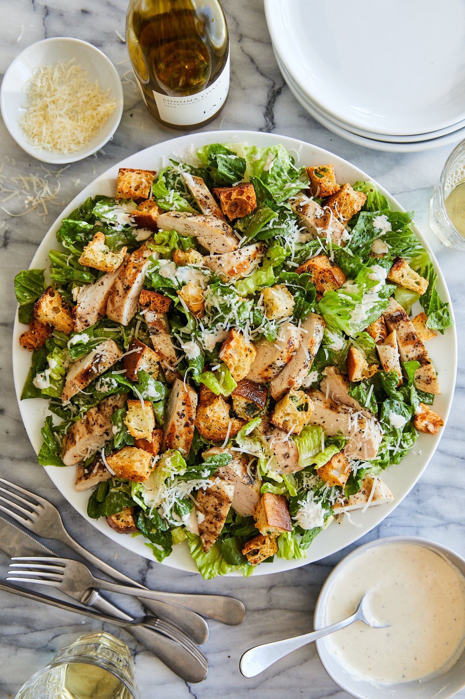

CAESAR SALAD RECIPE

Description:
Caesar salad is a classic and refreshing dish that combines crisp romaine lettuce with tangy Caesar dressing, crunchy croutons, and savory Parmesan cheese. This simple yet elegant salad is a perfect starter or light meal, offering a burst of flavors and textures in every bite. Whether served as an appetizer, side dish, or main course, Caesar salad is a timeless favorite that never goes out of style.
Ingredients:
- For Salad:
- Romaine lettuce, chopped
- Croutons
- Grated Parmesan cheese
- For Caesar Dressing:
- Mayonnaise
- Anchovy fillets, minced (optional)
- Garlic cloves, minced
- Grated Parmesan cheese
- Lemon juice
- Dijon mustard
- Worcestershire sauce
- Extra virgin olive oil
- Salt and black pepper to taste
- Optional Additions:
- Grilled chicken breast
- Cherry tomatoes, halved
- Sliced avocado
- Hard-boiled eggs, sliced
- Crispy bacon, chopped
Steps:
- Prepare the Dressing: In a small bowl, whisk together mayonnaise, minced anchovy fillets (if using), minced garlic, grated Parmesan cheese, lemon juice, Dijon mustard, and Worcestershire sauce.
- Emulsify: While whisking continuously, slowly drizzle in the extra virgin olive oil until the dressing is smooth and well combined. Season with salt and black pepper to taste. Adjust the consistency with a little water if needed.
- Assemble the Salad: In a large salad bowl, toss chopped romaine lettuce with Caesar dressing until evenly coated. Add croutons and grated Parmesan cheese, and toss again to combine.
- Add Optional Ingredients: If desired, add grilled chicken breast, cherry tomatoes, sliced avocado, hard-boiled eggs, or crispy bacon to the salad for extra flavor and protein.
- Serve: Divide the Caesar salad among serving plates or bowls. Garnish with additional grated Parmesan cheese and freshly ground black pepper, if desired. Serve immediately and enjoy!